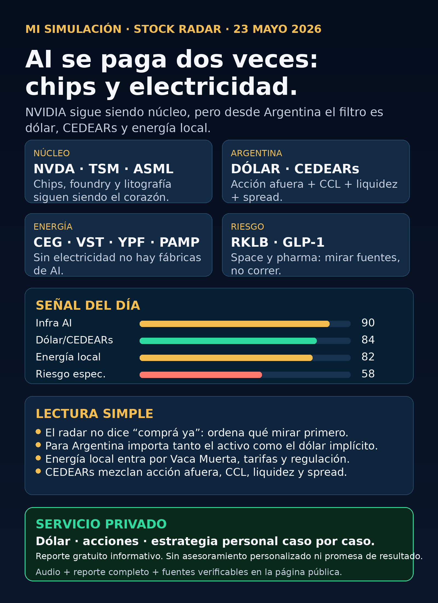

AI se paga dos veces: chips y electricidad.
NVIDIA sigue siendo núcleo, pero desde Argentina el filtro es dólar, CEDEARs y energía local.

Mi Simulación · Stock Radar — 23/05
Lectura simple
AI se paga dos veces. Primero en chips. Después en electricidad, data centers, red, capital y capacidad física.
NVIDIA sigue siendo el núcleo del radar, pero para una persona en Argentina el análisis no termina en mirar un ticker de Estados Unidos. Hay que mirar también el instrumento disponible, el dólar implícito, la liquidez, el spread, las comisiones y el riesgo local.
Este reporte no es una lista de compra. Es un mapa educativo para ordenar qué mirar antes de tomar decisiones con plata real.
La tesis del día
La inteligencia artificial dejó de ser solo una historia de chips. La nueva capa importante es infraestructura física: energía, transmisión, data centers, cooling, permisos, capital y escala.
Para Argentina, esa tesis se traduce en dos pantallas al mismo tiempo.
Primero, la pantalla global: NVIDIA, TSM, ASML, Google, data centers, utilities, pharma, space y autonomy.
Segundo, la pantalla local: dólar MEP/CCL, CEDEARs, volumen, spread, bonos usados como termómetro del dólar financiero, energéticas argentinas y riesgo regulatorio.
Dólar y Argentina
Dato de referencia para esta edición: DolarAPI mostró dólar MEP/Bolsa venta cerca de 1434,3 y CCL venta cerca de 1486,6, con actualización del 23/05. Es dato de contexto, no señal de compra.
En Argentina, un CEDEAR no se mueve solo por la acción afuera. También pesa el CCL implícito. Por eso una persona puede creer que está comprando solo NVIDIA, Google o Tesla, pero en la práctica también está tomando exposición al dólar financiero y a la liquidez del mercado local.
Antes de operar un CEDEAR hay que mirar cuatro cosas: qué empresa hay detrás, qué precio tiene la acción afuera, qué dólar implícito se está pagando y qué tan fácil es entrar o salir sin que el spread se coma parte del resultado.
Fuente dólar: https://dolarapi.com/v1/dolares
Infra AI
NVIDIA sigue siendo la referencia central de AI infra. La compañía reportó Q1 FY2027 con ingresos de USD 81.6B y Data Center de USD 75.2B. Eso confirma demanda real por infraestructura de AI.
Pero la lectura educativa es esta: una empresa puede ser excelente y aun así estar cara. Buen negocio no significa buena inversión a cualquier precio.
TSM sigue siendo clave como foundry avanzada. ASML sigue siendo cuello de botella por litografía. MU entra por memoria. Google/Alphabet entra por cloud, TPUs y distribución.
Fuente NVIDIA: https://nvidianews.nvidia.com/news/nvidia-announces-financial-results-for-first-quarter-fiscal-2027
Energía global y energía argentina
Sin electricidad no hay fábricas de AI. Esa frase resume la capa nueva del radar.
Afuera entran utilities, generación, transmisión, nuclear, gas, transformadores, data centers y cooling. El anuncio Google + Blackstone para TPU cloud muestra que AI también requiere edificios, energía y capital. Blackstone comprometió inicialmente USD 5B y el plan espera 500MW online en 2027.
Fuente Google/Blackstone: https://blog.google/innovation-and-ai/infrastructure-and-cloud/google-cloud/blackstone-tpu-cloud/
Desde Argentina, energía no puede quedar afuera. YPF, Pampa Energía, TGS, Central Puerto, Edenor, Transener y otras del ecosistema local entran como radar educativo por Vaca Muerta, tarifas, regulación, deuda, exportaciones, infraestructura y dólar.
Esto no significa comprar energéticas. Significa mirar si hay negocio real, precio razonable, regulación tolerable y riesgo compatible con la cartera de cada persona.
Pharma y salud
GLP-1 sigue en radar porque obesidad y diabetes son mercados enormes. Novo Nordisk y Lilly son nombres centrales del sector.
Novo tuvo señales regulatorias verificadas sobre Wegovy oral y Wegovy 7.2 mg. La FDA también publicó una warning letter a un proveedor chino de semaglutide API, mostrando que incluso en una industria con demanda fuerte hay riesgo de calidad, producción y regulación.
En criollo: pharma puede mover miles de millones, pero no es seguro. Hay ensayos, aprobaciones, patentes, producción y competencia.
Fuentes: https://www.sec.gov/Archives/edgar/data/353278/000117184326003634/f6k_052226.htm y https://www.fda.gov/inspections-compliance-enforcement-and-criminal-investigations/warning-letters/harbin-jixianglong-biotech-co-ltd-723330-05012026
Space y riesgo especulativo
Rocket Lab sigue en radar por space systems, defensa y lanzamientos. Pero también aparece el riesgo de dilución: un programa para vender acciones por hasta USD 3.0B puede financiar crecimiento, pero también aumentar la cantidad de acciones y diluir al accionista.
En criollo: space puede ser una tesis interesante de largo plazo, pero no es núcleo defensivo. Es volatilidad, financiamiento, contratos, ejecución y riesgo.
Fuente RKLB: https://www.sec.gov/Archives/edgar/data/1819994/000181999426000044/rocketlabcorporation-424b5.htm
Autonomy y physical AI
Autonomy sigue en seguimiento, pero no como promesa mágica. Waymo entra vía Alphabet. Tesla mezcla autos, energía, robotaxis y robotics. Uber puede beneficiarse o sufrir según cómo avance robotaxi. Amazon/Zoox es exposición indirecta. Joby es eVTOL, regulación pesada y alto riesgo.
La regla es simple: no comprar futuro sin mirar ingresos actuales, regulación, competencia y precio.
Señal del día
La señal del día no es “comprá AI”. La señal es que AI se está convirtiendo en infraestructura física. Chips, electricidad, data centers, red, capital y dólar forman parte del mismo mapa.
Para el lector argentino, la prioridad es aprender a separar cuatro capas: empresa, precio, instrumento y cartera personal.
Servicio privado
Dólar · acciones · estrategia personal caso por caso.
Si querés servicios personalizados, consultas privadas o compra/venta de dólares, escribime por privado.
Reporte gratuito informativo. No es asesoramiento financiero personalizado ni promesa de resultado.